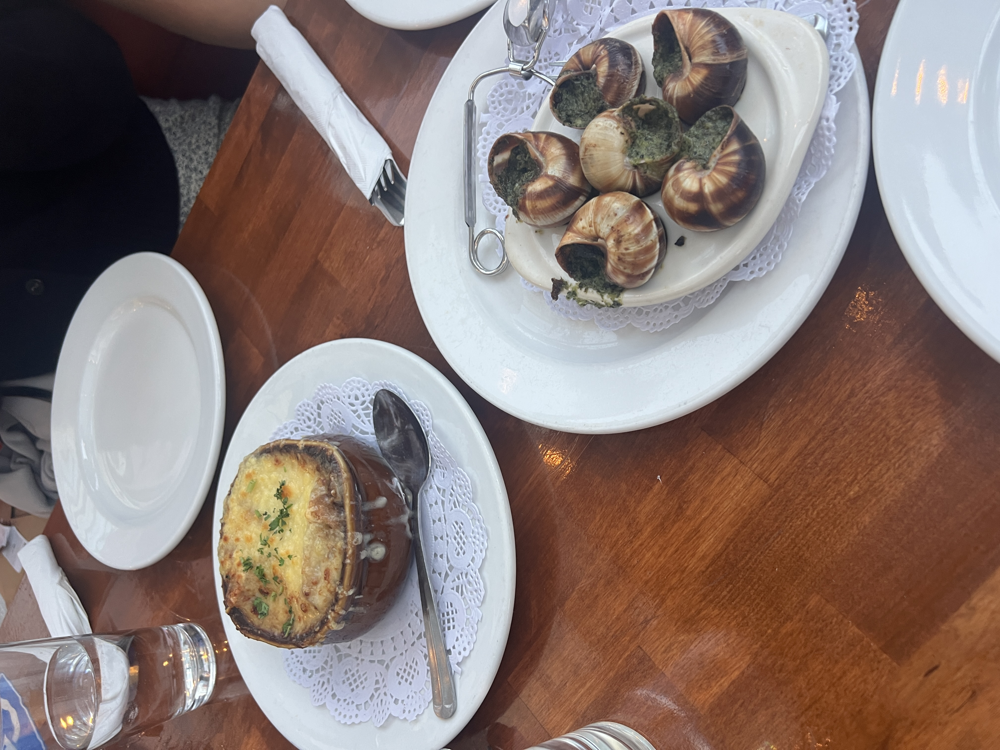

on vegetarianism
the right decision for me :) | 5/13/2026 | 10 min
last month, I was catching up with some friends over dinner at a French restaurant called Chez Maman. it was a wonderful time. we ordered everything family style: fries, mac n cheese, salad w/ bacon bits, french onion soup, oysters, and escargot.
I mostly stuck to the fries and mac n cheese while we gave our life updates and discussed our hot takes,1 until someone passed me the snail plate.

the snail plate in question.I politely declined, but was instantly egged on.
"here, try some"
"oh no, it's ok I'm still working on my mac n cheese"
"here, I'll give you one"
"oh no, I'm alright, I don't want it"
"…why not?"
"… I just don't want it"
"oh come on, just try it! don't be a baby…"
how did we get here
I had only made the decision a few months ago, this past December. I could count the number of people I had told on one hand. it wasn't (isn't) something I liked talking about.
I went into it knowing that I wanted to keep any virtue signaling to a minimum. I was always annoyed by people who went to such great lengths to bring up their dietary preferences and I knew that I didn't want to be one of them. so I tried not to tell people.
very quickly though, I realized that was not practical. consider the snail ordeal. I couldn't have them thinking I was a baby for not wanting to eat the escargot. I'm not a baby!!!!!!!
so I outed myself.2
the inevitable question…
why?
everyone asks that. what made you want to do it? it's a reasonable thing to ask.
for me, it's a combination of being bombarded with anti-carnivore propaganda for months by my brother-in-law and coming across an argument from a guy who I really respect named Peter Singer.3
I like to think I'm an open minded person. I enjoy considering even the (seemingly) stupidest of arguments. often I do this in order to think of counter arguments, but sometimes I'm not able to.
this was one of those cases. I couldn't refute all the doubts that were coming up against the morality of eating meat.
for me this was huge red flag. why am I doing something that I can't personally justify?
so I stopped.
it's a personal choice
that being said, I don't fault anyone for their personal choices. if you want to eat meat, you should. I respect your decision and I won't try to change your mind.
some people, upon hearing of my new preferences, make an effort to justify their own. which I fully understand. sometimes it's just an attempt to make conversation. sometimes it's the beginning of them questioning their own moral stance. I welcome all of it. my only hope is that they respect my decision the same way I respect theirs.
from these people, I've heard a variety of arguments that I'd like to briefly respond to here. for each of these arguments, I will attempt to be as charitable as possible to the arguer's perspective. no straw men here (I hope).
the bad…
1. I like meat and I don't want to give it up. this is totally valid. it's a personal choice. for me, I value the wellbeing animals more than I value the taste of meat. I don't fault you for thinking differently, though I do wish you would.
1.5. meat is an important part of my culture. I hear this one too, and I would respond similarly as above.
2. humans evolved as meat eaters. we need meat to survive. vegetarianism is unnatural. this is true. we also evolved to live in caves as hunter gatherers. that doesn't mean we should continue down that path if we don't have to. we can fill the nutritional gaps fairly easily with supplements.
3. should we condemn animals for eating other animals too? there are kind of two points baked into this argument: one is that if other animals can do it, then it should be ok for us too. I would argue there's a fundamental difference between an animal like a bear eating meat and us eating meat: we don't have to eat meat to survive. there are other alternatives. many people have gone years without so much as touching meat. a bear is not able to get dietary supplements in the wild, so it must eat meat to survive. this makes it ok. the other implication here is that we then have a moral obligation to prevent wild animals from eating meat to avoid more suffering. this one is a litle dicier, but to me still falls flat. I think if there were a practical way to balance the ecological contraints of a system and also prevent animals from eating each other then we should do that. as it stands, I'm not sure it's possible. maybe worth looking into more.
4. I don't believe animals are capable of suffering. this brings up a deeply existential question… what is suffering? on the same note, what is consciousness? are animals conscious? we have reason to believe they are, but it's impossible to prove. does this mean we should ignore the possibility? it's also impossible to prove that every person besides you is conscious. should we ignore their rights as humans because of that?
5. I don't care that animals suffer. it is more important for humans to be happy. you're entitled to your opinion, but I disagree. I don't think humans are all that different from other animals and if we are able to reduce their suffering with small concessions like giving up meat, then I think it is worth it. the natural follow up question here is: which do you value more? it's hard to answer. trying to be practical, if there was a person and an animal hanging from a cliff and I could only save one, I'd probably choose the human. but this doesn't mean I don't value the animal. it's not a contradiction to say that I value the life of an animal over the luxury of eating meat.
the less bad
6. I don't feel bad eating an animal that I raised myself on a farm. it had a good life, it passed away of natural causes. what's the harm? isn't it better to make use of their body? I have sympathy for this argument, and I can see where they're coming from. isn't the root of vegetarianism an attempt to avoid an animal's suffering? if they didn't suffer and just died of natural causes, it should then be ok to eat them, right? personally, I can't justify this since I find the idea of eating a human who passed away of natural causes disgusting. if we're ok with eating an animal that died of old age, we should be ok with eating a human. you might say, "oh that's different because it's cannibalism and cannibalism is bad!" this might sound a bit insane but if I'm being very honest the line between cannibalism and carnivorism has become increasingly blurry for me. it's difficult for me to accept one but not the other since we all evolved from the same starting point and are made of generally the same stuff. this brings up the next argument…
the good
7. if we all evolved from the same stuff, where do we draw the line? plants also evolved from a common ancestor. is it wrong to eat them? it's a fair point, and difficult to answer. the consensus here seems to be to draw the line at consciousness. unfortunately, we have no way of knowing which animals are conscious and which aren't, so it's a bit of a judgement call. like I said, it's a personal decision. you have to choose for yourself where to draw the line. for me, I choose to err on the side of caution.
8. why aren't you a vegan? it's a good question. maybe someday I'll do it. I'm still contributing some level of harm to animals by supporting factory farmed eggs and milk and etc. even still, the level of harm a vegetarian contributes is smaller than a non-vegetarian. it's a good start.
9. even vegans still contribute some level of harm to other species just by living. it seems impossible to avoid. why even try? just because something is impossible to avoid 100%, doesn't mean we shouldn't try. 95% of harm avoided is far far better than 0%. it doesn't have to be all or nothing. we try our best, we do what we can. that's what matters.
ok but do you have any arguments to support it?
yeah, but I'm not gonna get into it.
hopefully this doesn't feel too targeted at anyone! just something that's been on my mind. I really want to emphasize how much I believe this is a personal decision. what may work for me, might not work for you. and that's ok!
and now I will never bring it up ever again. it is 2 am as I write this and I have to wake up at 8 for work tomorrow. see you next time I face a moral crisis
(1) my hot take being that I think there is no such thing as truly good food, only adequate food with good vibes. in other words, the way we feel about how food looks, how we perceive others feel about food, how hungry we are, the quality of the company, and even just our current mood have a FAR greater impact on our perception of food than just the taste of it. there were also other takes that were given mostly for the sake of conversation rather than actually being something I believed e.g. there is no such thing as being "dirty," and national girlfriend/boyfriend day should not exist. actually I think I do believe the second one. anyways.
(2) to be clear I am being very dramatic mostly as a joke I understand it's not that big of a deal
(3) Singer also wrote a book called The Life You Can Save that delivers a very unique argument for charitable giving and the guy is pretty much a rockstar in the world of practical ethics.